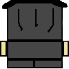

Jumpa is a young knight from the kingdom of Valdoria, trained to protect the land from monsters and invaders.
One day, a powerful ogre warlord named Gorvash the Breaker attacks the kingdom.
Gorvash destroys villages and defeats the knight forces with overwhelming strength.
During the battle, Jumpa’s mentor is killed right in front of him.
Jumpa survives but is left full of grief and anger.
He swears an oath of vengeance against Gorvash.
Leaving the kingdom behind, Jumpa travels into dangerous lands where the ogre hides.
Along the journey, he fights monsters and overcomes deadly challenges to grow stronger.
Each battle brings him closer to the truth about Gorvash and his power.
In the end, Jumpa reaches the ogre’s fortress, ready for a final battle to avenge his mentor.

Jumpa is a 2D side-scrolling action-platform game made with Pygame where the player can move, jump, fight enemies, and use items like a sword, pickaxe, and healing potions.
The player collects gold to buy potions and must manage health and resources while surviving obstacles and enemies.
As the score increases, the game becomes harder.
Eventually, an ogre boss appears and attacks with powerful projectiles, requiring careful timing and movement to defeat.
The goal is to survive, defeat the boss, and win the game.
If the player’s health reaches zero, it results in game over.